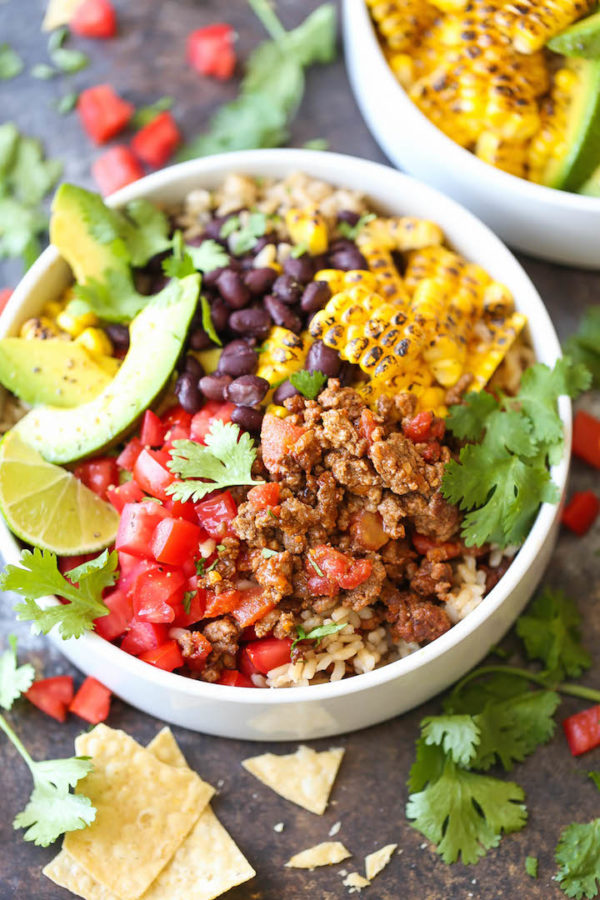

Taco Bowl

Taco Bowl Meal Prep
A simple taco bowl recipe for your meal prepping. Recipes
is for five servings.
Ingredients
- 2 lb ground beef
- 2 packets of taco seasoning
- 1 cup brown rice
- 1 can black beans
- 1 can whole kernel corn
Steps
- Cook rice in two cups of water
- Drain beans and corn and split into five containers
- Brown ground beef, then drain excess grease
- Add taco seasoning to beef, following instructions
- Add beef and rice, split into five portions, to containers